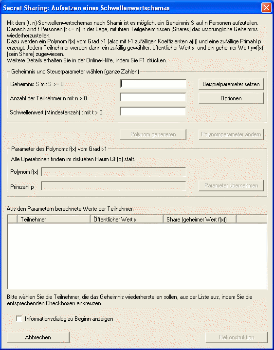

Diesen Dialog erreichen Sie über das Menü Einzelverfahren \ Secret-Sharing-Demo.
Mit Hilfe dieses Dialogs soll der Ablauf des (t, n)-Schwellenwertverfahren nach Shamir veranschaulicht werden. Er ermöglicht die freie Wahl der notwendigen Parameter sowie die Auswahl einer Teilmenge der Teilnehmer zur Rekonstruktion des Geheimnisses.

Im Bereich „Geheimnis und Steuerparameter wählen“ können Sie Ihr Geheimnis S eingeben und die Anzahl der Teilnehmer n sowie den Schwellenwert t festlegen. Alle Eingaben müssen ganze Zahlen sein. Zusätzlich besteht die Möglichkeit über den Button Optionen die Obergrenzen für die Teilnehmerzahl und die später benötigte Primzahl p zu verändern. Falls Sie keine konkreten Werte zur Hand haben sollten oder nur einen ersten Eindruck über die Funktionsweise des Verfahrens gewinnen möchten, können Sie sich auch Beispielparameter generieren lassen.
Im mittleren Teil des Dialogs werden alle weiteren Parameter des Shamir-Schemas angezeigt. Durch Anklicken des Buttons Polynom generieren bestimmt CrypTool als „Dealer“ eine zufällige Primzahl p, welche die Gruppe festlegt, in der alle Berechnungen erfolgen. Zusätzlich wird ein Polynom vom Grad t-1 mit zufälligen Koeffizienten erzeugt. An bereits erzeugten Primzahlen und Polynomen können auch im Nachhinein noch Modifikationen vorgenommen werden. Über Polynomparameter ändern wird ein entsprechender Dialog aufgerufen.
Klicken Sie den Button Parameter übernehmen an, so werden Ihnen im unteren Bereich des Dialogfeldes alle Teilnehmer angezeigt. Für jeden einzelnen Teilnehmer hat das Programm einen zufälligen öffentlichen Wert x aus GF(p) gewählt und das Polynom an der entsprechenden Stelle ausgewertet, so dass Sie eine Liste aller Teilnehmer und deren Shares präsentiert bekommen.
Die Auswahl mehrerer Teilnehmer ist möglich, indem Sie durch einen Mausklick einen Haken in die dafür vorgesehenen Kästchen setzen.
Betätigen Sie dann den Button Rekonstruktion, um das Geheimnis aus den Shares der ausgewählten Teilnehmer zu erstellen. Die von Ihnen getroffene Teilnehmerauswahl und das Geheimnis wird in einem separaten Dialog angezeigt.